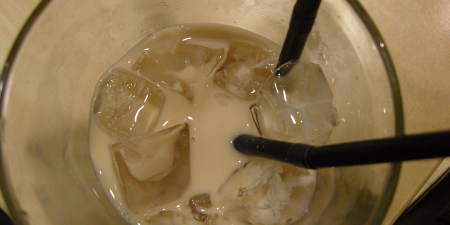
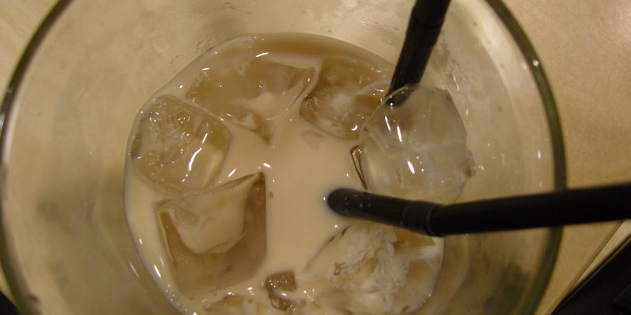

The Big Lebowski Fan Page
The Big Lebowski is a 1998 American crime comedy film written, produced, and directed by Joel and Ethan Coen. It stars Jeff Bridges as Jeffrey "The Dude" Lebowski, a Los Angeles slacker and avid bowler. He is assaulted as a result of mistaken identity, after which The Dude learns that a millionaire also named Jeffrey Lebowski was the intended victim. The millionaire Lebowski's trophy wife is kidnapped, and he commissions The Dude to deliver the ransom to secure her release; but the plan goes awry when the Dude's friend Walter Sobchak (John Goodman) schemes to keep the ransom money. Julianne Moore and Steve Buscemi also star, with David Huddleston, John Turturro, Philip Seymour Hoffman, Sam Elliott, Tara Reid, David Thewlis and Flea appearing in supporting roles.

The film is loosely inspired by the work of Raymond Chandler. Joel Coen stated: "We wanted to do a Chandler kind of story – how it moves episodically, and deals with the characters trying to unravel a mystery, as well as having a hopelessly complex plot that's ultimately unimportant."[3] The original score was composed by Carter Burwell, a longtime collaborator of the Coen brothers.
The Big Lebowski was a disappointment at the U.S. box office and received mixed reviews at the time of its release. Over time, however, reviews have tended towards the positive, and the film has become a cult favorite,[4] noted for its idiosyncratic characters, dream sequences, unconventional dialogue, and eclectic soundtrack.[5] In 2014, the film was selected for preservation in the National Film Registry by the Library of Congress, being deemed "culturally, historically, or aesthetically significant."[6][7] A spin-off based on Turturro's character, titled Going Places, is currently filming, with Turturro also acting as writer and director.

On September 11, 1991[8][9] in Los Angeles, slacker Jeff "the Dude" Lebowski (Jeff Bridges) is assaulted in his home by two hired goons (Mark Pellegrino and Philip Moon) who demand money that the wife of a Jeffrey Lebowski owes to a porn magnate and loanshark named Jackie Treehorn (Ben Gazzara). The two soon realize they have attacked the wrong Jeffrey Lebowski and leave, but not before one of them urinates on the Dude's rug.
The Dude meets his bowling friends, the timid Donny (Steve Buscemi) and the temperamental Vietnam War veteran Walter Sobchak (John Goodman). Encouraged by Walter, the Dude approaches the other Jeffrey Lebowski (David Huddleston), the eponymous "Big Lebowski", a cantankerous elderly wheelchair-using millionaire, to seek compensation for his ruined rug. Though his request is promptly refused, The Dude craftily steals one of Lebowski's expensive rugs by telling Brandt (Philip Seymour Hoffman), Lebowski's sycophantic assistant, that his boss told him to take any rug in the house. The Dude subsequently meets Bunny (Tara Reid), Lebowski's young trophy wife.